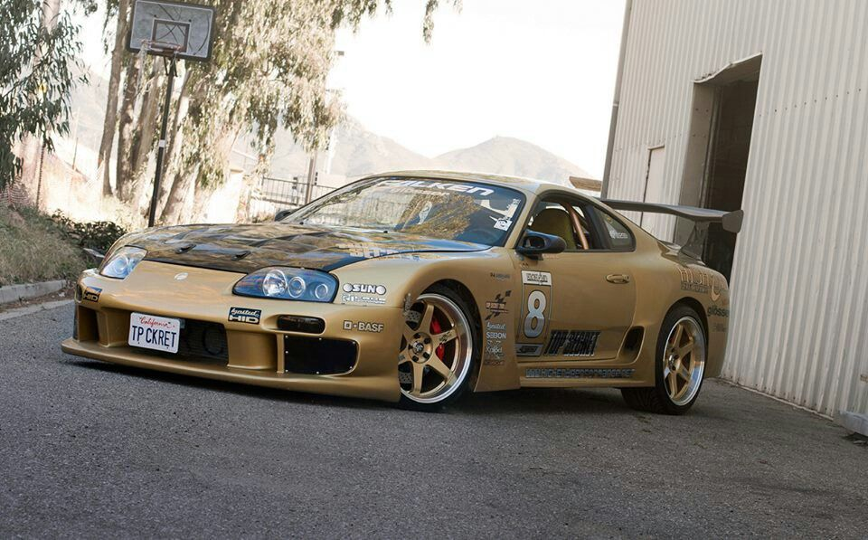

The Legend of Smokey Nagata's MK4 Supra
Kazuhiko "Smokey" Nagata is a legendary figure in the world of high-performance tuning. His MK4 Toyota Supra, built under his tuning company Top Secret, is one of the most famous Supras ever created. It has earned its place in automotive history due to its extreme modifications, jaw-dropping speed runs, and the boldness of its creator.
Build Time
Smokey Nagata's Supra took several years to perfect. The project involved countless hours of engineering, testing, and tweaking to create a machine capable of achieving world-record speeds. Smokey's dedication to the craft is evident in the precision and quality of the build, which continues to inspire tuners worldwide.
Modifications
The MK4 Supra underwent extensive modifications to achieve its incredible performance. Some of the key upgrades include:
- Engine: 3.0L 2JZ-GTE inline-six, heavily modified with a single turbocharger setup.
- Turbocharger: A large HKS GT3240 single turbo, capable of delivering immense power.
- Transmission: Upgraded to handle the massive power output.
- Aerodynamics: Custom body kit designed by Top Secret, optimizing the car for high-speed runs.
- Suspension: Fully adjustable coilover suspension for improved handling at high speeds.
- Fuel System: Upgraded to deliver the necessary fuel flow for the highly boosted engine.
Speed Runs
One of the most infamous moments in Smokey Nagata's career was his high-speed run on a public highway in the UK in 1998. Despite the danger and legal repercussions, Smokey managed to clock over 200 mph, making his Supra one of the fastest cars ever on public roads. This bold act solidified his reputation in the automotive world.
Cost of the Build
The cost to build Smokey Nagata's MK4 Supra was astronomical, even by today's standards. The total investment is estimated to be well over $100,000, accounting for the high-end parts, extensive modifications, and countless hours of labor. Smokey's dedication and investment in his Supra reflect his commitment to pushing the boundaries of what is possible with automotive engineering.
Comparison to Modern Supras
While the MK4 Supra remains a legend, the landscape of high-performance cars has evolved. The new MK5 Supra, though technologically advanced, lacks the raw, untamed spirit of Smokey's creation. Modern Supras focus more on a balanced performance with an emphasis on handling, comfort, and advanced driving aids. However, Smokey's MK4 Supra remains a benchmark for enthusiasts who prioritize sheer power and speed over all else.